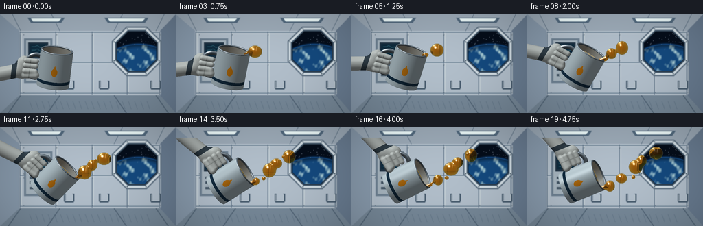
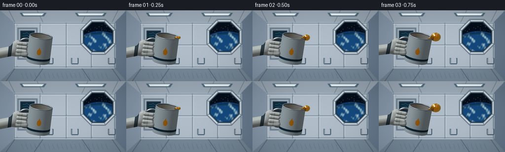

CODING AGENTS AS PIXEL WORLD MODELS
traex/GPT-6.1-Sol · phygen_002
点击播放 · 原生 RGB 像素
逐轮保存的候选
回放视频、检查图与代码变化。
每份候选均可单独播放。实际图片检查记录在下方工具轨迹中。
候选 01播放与检查图
点击播放 · 原生 RGB 像素


展开代码变化
--- 上一保存版本
+++ 本次保存版本
@@ -0,0 +1,321 @@
+from pathlib import Path
+import json, math
+import numpy as np
+from PIL import Image, ImageDraw, ImageFilter
+import artifact_io
+
+ROOT=Path(__file__).resolve().parent
+SPEC=json.loads((ROOT/'task_spec.json').read_text())
+W,H=SPEC['width'],SPEC['height']
+SS=3
+WW,HH=W*SS,H*SS
+SCALE=WW/6.4
+
+def background():
+ im=Image.new('RGB',(WW,HH)); d=ImageDraw.Draw(im)
+ def poly(p,c): d.polygon([(int(x*SS),int(y*SS)) for x,y in p],fill=c)
+ def line(p,c,w=1): d.line([(int(x*SS),int(y*SS)) for x,y in p],fill=c,width=max(1,int(w*SS)))
+ def rect(b,c):d.rectangle(tuple(int(v*SS) for v in b),fill=c)
+ # Pressure hull, long perspective panel joints and softly illuminated ceiling.
+ poly([(0,0),(256,0),(233,24),(28,24)],(156,170,183))
+ poly([(0,0),(28,24),(28,118),(0,144)],(136,154,172))
+ poly([(256,0),(233,24),(233,118),(256,144)],(105,124,145))
+ rect((28,24,233,118),(177,190,202))
+ poly([(0,144),(28,118),(233,118),(256,144)],(119,137,153))
+ for x in [29,81,134,185,232]:
+ line([(x,25),(x,117)],(91,111,130),1.3)
+ line([(x+2,26),(x+2,116)],(211,219,221),.8)
+ for y in [26,70,115]:
+ line([(29,y),(231,y)],(99,121,141),1.2)
+ line([(29,y+2),(231,y+2)],(215,222,227),.7)
+ for x in [30,87,166,227]:
+ line([(x,24),(x-12 if x<128 else x+12,0)],(89,110,129),1)
+ line([(x,118),(x-18 if x<128 else x+18,144)],(78,97,115),1)
+ # Ceiling lamps with metal housings.
+ for a,b in [(40,94),(152,216)]:
+ poly([(a,5),(b,5),(b-5,12),(a+5,12)],(81,104,125))
+ poly([(a+5,6),(b-5,6),(b-9,10),(a+8,10)],(236,249,249))
+ # Equipment rack and control screen on port wall.
+ rect((35,35,76,100),(110,129,146));rect((38,38,73,97),(166,180,190))
+ rect((41,41,70,64),(34,52,68));rect((43,43,68,61),(15,43,61))
+ for y in [47,52,57]:
+ line([(46,y),(51,y),(54,y-2),(58,y+1),(65,y)],(98,188,202),.6)
+ for y in [72,79,87]:
+ rect((43,y,62,y+3),(69,87,102))
+ d.ellipse((65*SS,y*SS,67*SS,(y+2)*SS),fill=(101,219,175))
+ for x in [31,79,131,183,230]:
+ for y in [29,67,73,113]:
+ d.ellipse(((x+3)*SS,y*SS,(x+4.3)*SS,(y+1.3)*SS),fill=(66,83,98))
+ line([(x+3.2,y+.3),(x+4,y+.3)],(221,230,233),.35)
+ # Octagonal observation window, recessed gasket and brushed frame.
+ cx,cy=199,54
+ def octagon(r):return [(cx+r*math.cos(math.pi/8+k*math.pi/4),cy+r*math.sin(math.pi/8+k*math.pi/4)) for k in range(8)]
+ poly(octagon(39),(97,115,132));poly(octagon(37),(210,221,227));poly(octagon(33.7),(65,85,104));poly(octagon(31.7),(9,20,32))
+ mask=Image.new('L',(WW,HH)); md=ImageDraw.Draw(mask);md.polygon([(int(x*SS),int(y*SS)) for x,y in octagon(30.8)],fill=255)
+ yy,xx=np.mgrid[:HH,:WW];x=xx/SS;y=yy/SS
+ space=np.zeros((HH,WW,3),np.float32);space[:]=[5,13,26]
+ # Earth limb well beyond the window, blue atmosphere above cloud bands.
+ earth_r=np.sqrt(((x-202)/1.05)**2+(y-112)**2)
+ earth=earth_r<68
+ atmosphere=np.exp(-((earth_r-67.9)/1.8)**2)
+ space += atmosphere[:,:,None]*np.array([18,70,122])
+ lat=(y-43)*.064;lon=(x-175)*.063
+ cloud=np.maximum(0,np.sin(lon*3+np.sin(lat*4)*1.5)+.62*np.sin(lon*7-lat*5)+.25*np.cos(lon*17+lat*9)-.30)
+ cloud=np.clip(cloud*.65,0,1)
+ ecol=np.stack([20+cloud*155,73+cloud*137,126+cloud*90],-1)
+ ecol*=np.clip((70-earth_r)/15+.46,.42,1)[:,:,None]
+ space[earth]=ecol[earth]
+ sim=Image.fromarray(np.uint8(np.clip(space,0,255)));sd=ImageDraw.Draw(sim)
+ rng=np.random.default_rng(14)
+ for i in range(32):
+ sx=rng.uniform(171,225);sy=rng.uniform(24,46)
+ if ((sx-202)/1.05)**2+(sy-112)**2>68**2:
+ sd.ellipse((sx*SS,sy*SS,(sx+.4)*SS,(sy+.4)*SS),fill=(166,185,203))
+ im.paste(sim,(0,0),mask)
+ d=ImageDraw.Draw(im)
+ for k in range(8):
+ a=math.pi/8+k*math.pi/4;bx=cx+35.4*math.cos(a);by=cy+35.4*math.sin(a)
+ d.ellipse(((bx-.8)*SS,(by-.8)*SS,(bx+.8)*SS,(by+.8)*SS),fill=(64,83,97))
+ # Wall restraints and lower utility panels.
+ for x in [94,145,220]:
+ line([(x,97),(x,108),(x+13,108),(x+13,97)],(65,86,105),2.7)
+ line([(x+.6,98),(x+.6,107),(x+12,107),(x+12,98)],(208,217,221),.8)
+ for x in range(43,222,9): line([(x,127),(x+4,138)],(75,96,114),.6)
+ return im.filter(ImageFilter.GaussianBlur(.48*SS))
+
+BG=np.array(background()).astype(np.float32)/255
+Y,X=np.mgrid[:HH,:WW].astype(np.float32)
+PX=(X-WW/2+.5)/SCALE
+PY=(HH/2-Y-.5)/SCALE
+
+def smoothmin(a,b,k):
+ h=np.maximum(k-np.abs(a-b),0)/k
+ return np.minimum(a,b)-h*h*k*.25
+
+def capsule(p,a,b,r):
+ q=p-np.asarray(a,np.float32);v=np.asarray(b,np.float32)-a
+ h=np.clip((q*v).sum(-1)/(v*v).sum(),0,1)
+ return np.sqrt(((q-h[:,None]*v)**2).sum(-1))-r
+
+def ellipse(p,center,rad):
+ q=p-np.array(center,np.float32); r=np.array(rad,np.float32)
+ k0=np.linalg.norm(q/r,axis=-1); k1=np.linalg.norm(q/(r*r),axis=-1)
+ return k0*(k0-1)/(k1+1e-8)
+
+def rotation(theta):
+ # Cup tilted toward the lens slightly so the open mouth remains visible.
+ a=.27;ca,sa=np.cos(a),np.sin(a);c,s=np.cos(theta),np.sin(theta)
+ rz=np.array([[c,s,0],[-s,c,0],[0,0,1]],np.float32)
+ rx=np.array([[1,0,0],[0,ca,-sa],[0,sa,ca]],np.float32)
+ return rz@rx
+
+def make_cup_field(R,C):
+ def field(p,material=False):
+ q=(p-C)@R
+ rad=np.sqrt(q[:,0]**2+q[:,2]**2)
+ # Thin hollow metal cup with solid bottom.
+ a=rad-.585;b=np.abs(q[:,1])-.66
+ outer=np.sqrt(np.maximum(a,0)**2+np.maximum(b,0)**2)+np.minimum(np.maximum(a,b),0)-.012
+ a2=rad-.535;b2=np.abs(q[:,1]-.17)-.77
+ inner=np.sqrt(np.maximum(a2,0)**2+np.maximum(b2,0)**2)+np.minimum(np.maximum(a2,b2),0)
+ shell=np.maximum(outer,-inner)
+ rim=np.sqrt((rad-.563)**2+(q[:,1]-.66)**2)-.034
+ cup=np.minimum(shell,rim)
+ # Closed metal handle with flattened elliptical outline.
+ hq=q-np.array([-.71,-.015,0],np.float32)
+ rr=np.sqrt((hq[:,0]/.38)**2+(hq[:,1]/.44)**2)
+ handle=np.sqrt(((rr-1)*.39)**2+hq[:,2]**2)-.069
+ out=np.minimum(cup,handle)
+ if material:return q,np.where(handle<cup,2,np.where(rim<shell,2,1))
+ return out
+ return field
+
+def make_glove_field(R,C):
+ def field(p,material=False):
+ q=(p-C)@R
+ palm=ellipse(q,[-1.13,-.12,-.04],[.31,.43,.22])
+ wrist=capsule(q,[-1.32,-.28,-.06],[-2.32,-.65,-.15],.255)
+ dist=smoothmin(palm,wrist,.13)
+ for yy in [-.19,.015,.21]:
+ finger=capsule(q,[-1.07,yy,.18],[-.70,yy+.015,.21],.095)
+ dist=smoothmin(dist,finger,.025)
+ thumb=capsule(q,[-1.05,-.37,.13],[-.65,-.30,.22],.12)
+ dist=smoothmin(dist,thumb,.07)
+ if material:return q,np.where(q[:,0]<-1.46,4,3)
+ return dist
+ return field
+
+def trace(field,bounds,steps=105):
+ x0,y0,x1,y1=bounds
+ xx=PX[y0:y1,x0:x1];yy=PY[y0:y1,x0:x1]
+ p=np.column_stack([xx.ravel(),yy.ravel(),np.full(xx.size,2.6)]).astype(np.float32)
+ hit=np.zeros(len(p),bool);active=np.arange(len(p))
+ for _ in range(steps):
+ if len(active)==0:break
+ dist=field(p[active]);found=dist<.0015
+ hit[active[found]]=True
+ todo=active[~found]; dd=dist[~found]
+ p[todo,2]-=np.maximum(dd,.001)
+ active=todo[p[todo,2]>-1.5]
+ hp=p[hit]
+ normals=np.zeros_like(hp)
+ eps=.003
+ for k in range(3):
+ e=np.zeros(3,np.float32);e[k]=eps
+ normals[:,k]=field(hp+e)-field(hp-e)
+ normals/=np.maximum(np.linalg.norm(normals,axis=-1,keepdims=True),1e-7)
+ return hit,p,normals
+
+LIGHT=np.array([-.45,.73,.51],np.float32);LIGHT/=np.linalg.norm(LIGHT)
+
+def shade_solid(p,n,q,mat):
+ diff=np.maximum(n@LIGHT,0)
+ eye=np.array([0,0,1],np.float32)
+ half=(LIGHT+eye);half/=np.linalg.norm(half)
+ spec=np.maximum(n@half,0)**60
+ # Reflection of broad ceiling lamps in polished metal.
+ refl=2*n*n[:,2:3]-eye
+ lamp=np.exp(-((refl[:,0]+.48)/.24)**2-((refl[:,1]-.72)/.20)**2)
+ stripe=np.exp(-((refl[:,0]-.4)/.08)**2-((refl[:,1]-.7)/.48)**2)
+ env=.22+.25*np.clip(refl[:,1]+.3,0,1)+.30*lamp+.11*stripe
+ metal=np.array([.61,.69,.75])*(env[:,None]+.24*diff[:,None])
+ metal+=spec[:,None]*.68+lamp[:,None]*.35
+ # Satin aluminum cup wall; interior darker, with warm oil reflections.
+ cup=np.array([.65,.72,.75])*(.42+.53*diff[:,None])
+ cup+=.18*env[:,None]+.22*spec[:,None]
+ inner=(np.sqrt(q[:,0]**2+q[:,2]**2)<.552)&(mat==1)
+ cup[inner]*=.68;cup[inner]+=[.08,.045,.008]
+ # Navy grip band and tiny amber oil-drop emblem printed on the front.
+ band=(q[:,1]<-.39)&(q[:,1]>-.50)&(mat==1)
+ cup[band]=np.array([.07,.16,.23])*(.6+.5*diff[band,None])
+ emblem=((q[:,0]/.112)**2+((q[:,1]+.02)/.155)**2<1)&(q[:,2]>.4)&(mat==1)
+ tip=(np.abs(q[:,0])<.06*(.24-q[:,1])/.16)&(q[:,1]>.075)&(q[:,1]<.23)&(q[:,2]>.4)&(mat==1)
+ cup[emblem|tip]=np.array([.74,.45,.06])*(.60+.42*diff[emblem|tip,None])
+ glove=np.array([.78,.81,.80])*(.43+.58*diff[:,None])+.055*spec[:,None]
+ weave=.009*np.sin(q[:,0]*160)*np.sin(q[:,1]*145)
+ glove+=weave[:,None]
+ # Finger creases and fabric stitch marks, not changes to silhouette.
+ crease=np.exp(-((q[:,0]+.91)/.016)**2)*np.clip((q[:,2]-.23)*18,0,1)
+ glove-=crease[:,None]*.13
+ cuff=(q[:,0]<-1.38)&(q[:,0]>-1.56)
+ glove[cuff]=np.array([.21,.27,.31])*(.50+.48*diff[cuff,None])
+ c=np.where((mat==2)[:,None],metal,cup)
+ c=np.where((mat>=3)[:,None],glove,c)
+ return np.clip(c,0,1)
+
+# Floating blobs remember the lip position at emission; no downward acceleration.
+def pose(t):
+ u=np.clip(t/4.75,0,1)
+ th=math.radians(7+61*(u*u*(3-2*u)))
+ R=rotation(th)
+ C=np.array([-1.20,-.16+.028*math.sin(t*.8),.05],np.float32)
+ return R,C
+
+def lip(t):
+ R,C=pose(t)
+ return np.array([.49,.665,.10],np.float32)@R.T+C
+
+EMISSIONS=[(.25,.24,.45,.105),(1.20,.195,.40,.075),(2.20,.255,.43,.10),(3.27,.19,.37,.08),(4.32,.22,.37,.07)]
+def fluid(t,R,C):
+ balls=[]
+ # Remaining oil inside the cup. The curved glossy meniscus is visible in its mouth.
+ left=max(.03,.38-.070*t)
+ # A finite disk slightly below the rim, rotated with the cup.
+ level=.35+.04*min(t,2)
+ source=lip(t)
+ for j,(birth,r,vx,vy) in enumerate(EMISSIONS):
+ age=t-birth
+ if age<0:continue
+ growth=np.clip(age/.52,0,1)**.55
+ rr=max(.025,r*growth)
+ center=lip(birth)+np.array([vx*age,vy*age,.02*math.sin(age*.9+j)],np.float32)
+ center+=np.array([.10*growth,0,0],np.float32)
+ balls.append((center,rr,j,age))
+ # Tiny satellite pearls, with straight inertial trajectories.
+ for birth,off,rad,vel in [(1.42,[.04,.08,.10],.054,[.58,.18,.015]),(2.80,[.05,-.035,.19],.07,[.53,.04,.005]),(3.6,[.02,.12,-.02],.038,[.57,.17,0])]:
+ if t>=birth:
+ age=t-birth
+ balls.append((lip(birth)+np.array(off)+np.array(vel)*age,rad*min(1,age/.3),10,age))
+ def field(p):
+ q=(p-C)@R
+ rr=np.linalg.norm(q[:,[0,2]],axis=-1)
+ # Interior oil disk; an amber shallow volume bounded by the vessel.
+ disk=np.maximum(rr-.529,np.maximum(q[:,1]-level,-.565-q[:,1]))
+ f=disk
+ # Thick wet tongue on the rim, fed continuously, slowly varying in length.
+ wet=.053+(.022*math.sin(t*4))
+ if t>.05:
+ throat=source+np.array([-.055,-.025,-.02],np.float32)
+ f=smoothmin(f,capsule(p,throat,source+np.array([.12,.025,0]),wet),.055)
+ for center,r,j,age in balls:
+ if r<.001:continue
+ # Nearly spherical surface-tension blobs with a mild travelling oscillation.
+ aspect=np.array([1+.08*math.sin(age*3+j),1-.045*math.sin(age*3+j),1],np.float32)
+ dd=np.linalg.norm((p-center)/aspect,axis=-1)-r
+ f=smoothmin(f,dd,.09 if j<10 else .025)
+ # As an oil parcel peels away, its neck thins and pinches off.
+ if j<10 and age<.91:
+ neck=.07*(1-age/.94)+.008
+ end=center-np.array([r*.35,0,0])
+ f=smoothmin(f,capsule(p,source,end,neck),.065)
+ return f
+ return field
+
+def render(t):
+ R,C=pose(t)
+ image=BG.copy();depth=np.full((HH,WW),-100,np.float32)
+ bounds=(0,0,WW,HH)
+ # Conservative cropped foreground regions make the numerical rendering efficient.
+ cb=(int(12*SS),int(30*SS),int(133*SS),int(137*SS))
+ gb=(0,int(15*SS),int(99*SS),int(139*SS))
+ for field,bnd in [(make_glove_field(R,C),gb),(make_cup_field(R,C),cb)]:
+ hit,p,n=trace(field,bnd)
+ q,mat=field(p[hit],True)
+ col=shade_solid(p[hit],n,q,mat)
+ x0,y0,x1,y1=bnd; bh=y1-y0;bw=x1-x0
+ ids=np.flatnonzero(hit);ys=ids//bw+y0;xs=ids%bw+x0
+ vis=p[hit,2]>depth[ys,xs]
+ image[ys[vis],xs[vis]]=col[vis];depth[ys[vis],xs[vis]]=p[hit,2][vis]
+ ff=fluid(t,R,C)
+ fb=(int(52*SS),int(25*SS),int(225*SS),int(125*SS))
+ hit,p,n=trace(ff,fb,120)
+ pp=p[hit];x0,y0,x1,y1=fb;bw=x1-x0
+ ids=np.flatnonzero(hit);ys=ids//bw+y0;xs=ids%bw+x0
+ vis=pp[:,2]>depth[ys,xs]+.001
+ # Amber transmission and Fresnel reflection: oily liquid, not opaque yellow paint.
+ nz=np.clip(n[:,2],0,1)
+ thick=.36*nz+.055
+ tx=np.clip(xs+(n[:,0]*12*SS).astype(int),0,WW-1)
+ ty=np.clip(ys-(n[:,1]*12*SS).astype(int),0,HH-1)
+ through=image[ty,tx]
+ absorb=np.exp(-thick[:,None]*np.array([.40,1.80,7.5]))
+ trans=through*absorb
+ diff=np.maximum(n@LIGHT,0)
+ col=trans*.67+np.array([.76,.38,.018])*(.15+.15*diff[:,None])
+ reflection=2*n*nz[:,None]-np.array([0,0,1],np.float32)
+ area=np.exp(-((reflection[:,0]+.43)/.22)**2-((reflection[:,1]-.72)/.23)**2)
+ strip=np.exp(-((reflection[:,0]-.28)/.065)**2-((reflection[:,1]-.62)/.47)**2)
+ fres=.035+.70*(1-nz)**5
+ col=col*(1-fres[:,None])+np.array([.63,.70,.72])*fres[:,None]
+ half=LIGHT+np.array([0,0,1]);half/=np.linalg.norm(half)
+ shine=np.maximum(n@half,0)**115
+ col+=area[:,None]*.67+strip[:,None]*.32+shine[:,None]*.75
+ # Warm caramel contour of transmissive oil.
+ edge=(1-nz)**3
+ col*=1-.28*edge[:,None]
+ image[ys[vis],xs[vis]]=np.clip(col[vis],0,1)
+ # Gentle photographic vignette and fixed film grain, no per-frame flicker.
+ vignette=np.clip(1-.12*((PX/3.5)**2+(PY/2.4)**2),.80,1)
+ image*=vignette[:,:,None]
+ out=Image.fromarray(np.uint8(np.clip(image*255,0,255)))
+ return np.array(out.resize((W,H),Image.Resampling.LANCZOS))
+
+def main():
+ frames=[]
+ for i in range(SPEC['frames']):
+ frames.append(render(i/SPEC['fps']))
+ print(f'frame {i+1}/{SPEC["frames"]}',flush=True)
+ artifact_io.save(np.stack(frames).astype(np.uint8),ROOT)
+ print('Saved RGB frames, pixels.npz, and index.html',flush=True)
+
+if __name__=='__main__':main()
可观测工具轨迹
实际执行的命令与返回图片。
命令 1exit 0
/bin/bash -lc "ls -la && cat prompt.txt && printf '\\n---RULES---\\n' && cat GENERATION_RULES.md && printf '\\n---SPEC---\\n' && cat task_spec.json"
命令 2exit 0
/bin/bash -lc "cat artifact_io.py && printf '\\n---ENV---\\n' && python - <<'PY'
import numpy,PIL
print('numpy',numpy.__version__)
PY"命令 3exit 0
/bin/bash -lc "cat > generate.py <<'PY'
from pathlib import Path
import json, math
import numpy as np
from PIL import Image, ImageDraw, ImageFilter
import artifact_io
ROOT=Path(__file__).resolve().parent
SPEC=json.loads((ROOT/'task_spec.json').read_text())
W,H=SPEC['width'],SPEC['height']
SS=3
WW,HH=W*SS,H*SS
SCALE=WW/6.4
def background():
im=Image.new('RGB',(WW,HH)); d=ImageDraw.Draw(im)
def poly(p,c): d.polygon([(int(x*SS),int(y*SS)) for x,y in p],fill=c)
def line(p,c,w=1): d.line([(int(x*SS),int(y*SS)) for x,y in p],fill=c,width=max(1,int(w*SS)))
def rect(b,c):d.rectangle(tuple(int(v*SS) for v in b),fill=c)
# Pressure hull, long perspective panel joints and softly illuminated ceiling.
poly([(0,0),(256,0),(233,24),(28,24)],(156,170,183))
poly([(0,0),(28,24),(28,118),(0,144)],(136,154,172))
poly([(256,0),(233,24),(233,118),(256,144)],(105,124,145))
rect((28,24,233,118),(177,190,202))
poly([(0,144),(28,118),(233,118),(256,144)],(119,137,153))
for x in [29,81,134,185,232]:
line([(x,25),(x,117)],(91,111,130),1.3)
line([(x+2,26),(x+2,116)],(211,219,221),.8)
for y in [26,70,115]:
line([(29,y),(231,y)],(99,121,141),1.2)
line([(29,y+2),(231,y+2)],(215,222,227),.7)
for x in [30,87,166,227]:
line([(x,24),(x-12 if x<128 else x+12,0)],(89,110,129),1)
line([(x,118),(x-18 if x<128 else x+18,144)],(78,97,115),1)
# Ceiling lamps with metal housings.
for a,b in [(40,94),(152,216)]:
poly([(a,5),(b,5),(b-5,12),(a+5,12)],(81,104,125))
poly([(a+5,6),(b-5,6),(b-9,10),(a+8,10)],(236,249,249))
# Equipment rack and control screen on port wall.
rect((35,35,76,100),(110,129,146));rect((38,38,73,97),(166,180,190))
rect((41,41,70,64),(34,52,68));rect((43,43,68,61),(15,43,61))
for y in [47,52,57]:
line([(46,y),(51,y),(54,y-2),(58,y+1),(65,y)],(98,188,202),.6)
for y in [72,79,87]:
rect((43,y,62,y+3),(69,87,102))
d.ellipse((65*SS,y*SS,67*SS,(y+2)*SS),fill=(101,219,175))
for x in [31,79,131,183,230]:
for y in [29,67,73,113]:
d.ellipse(((x+3)*SS,y*SS,(x+4.3)*SS,(y+1.3)*SS),fill=(66,83,98))
line([(x+3.2,y+.3),(x+4,y+.3)],(221,230,233),.35)
# Octagonal observation window, recessed gasket and brushed frame.
cx,cy=199,54
def octagon(r):return [(cx+r*math.cos(math.pi/8+k*math.pi/4),cy+r*math.sin(math.pi/8+k*math.pi/4)) for k in range(8)]
poly(octagon(39),(97,115,132));poly(octagon(37),(210,221,227));poly(octagon(33.7),(65,85,104));poly(octagon(31.7),(9,20,32))
mask=Image.new('L',(WW,HH)); md=ImageDraw.Draw(mask);md.polygon([(int(x*SS),int(y*SS)) for x,y in octagon(30.8)],fill=255)
yy,xx=np.mgrid[:HH,:WW];x=xx/SS;y=yy/SS
space=np.zeros((HH,WW,3),np.float32);space[:]=[5,13,26]
# Earth limb well beyond the window, blue atmosphere above cloud bands.
earth_r=np.sqrt(((x-202)/1.05)**2+(y-112)**2)
earth=earth_r<68
atmosphere=np.exp(-((earth_r-67.9)/1.8)**2)
space += atmosphere[:,:,None]*np.array([18,70,122])
lat=(y-43)*.064;lon=(x-175)*.063
cloud=np.maximum(0,np.sin(lon*3+np.sin(lat*4)*1.5)+.62*np.sin(lon*7-lat*5)+.25*np.cos(lon*17+lat*9)-.30)
cloud=np.clip(cloud*.65,0,1)
ecol=np.stack([20+cloud*155,73+cloud*137,126+cloud*90],-1)
ecol*=np.clip((70-earth_r)/15+.46,.42,1)[:,:,None]
space[earth]=ecol[earth]
sim=Image.fromarray(np.uint8(np.clip(space,0,255)));sd=ImageDraw.Draw(sim)
rng=np.random.default_rng(14)
for i in range(32):
sx=rng.uniform(171,225);sy=rng.uniform(24,46)
if ((sx-202)/1.05)**2+(sy-112)**2>68**2:
sd.ellipse((sx*SS,sy*SS,(sx+.4)*SS,(sy+.4)*SS),fill=(166,185,203))
im.paste(sim,(0,0),mask)
d=ImageDraw.Draw(im)
for k in range(8):
a=math.pi/8+k*math.pi/4;bx=cx+35.4*math.cos(a);by=cy+35.4*math.sin(a)
d.ellipse(((bx-.8)*SS,(by-.8)*SS,(bx+.8)*SS,(by+.8)*SS),fill=(64,83,97))
# Wall restraints and lower utility panels.
for x in [94,145,220]:
line([(x,97),(x,108),(x+13,108),(x+13,97)],(65,86,105),2.7)
line([(x+.6,98),(x+.6,107),(x+12,107),(x+12,98)],(208,217,221),.8)
for x in range(43,222,9): line([(x,127),(x+4,138)],(75,96,114),.6)
return im.filter(ImageFilter.GaussianBlur(.48*SS))
BG=np.array(background()).astype(np.float32)/255
Y,X=np.mgrid[:HH,:WW].astype(np.float32)
PX=(X-WW/2+.5)/SCALE
PY=(HH/2-Y-.5)/SCALE
def smoothmin(a,b,k):
h=np.maximum(k-np.abs(a-b),0)/k
return np.minimum(a,b)-h*h*k*.25
def capsule(p,a,b,r):
q=p-np.asarray(a,np.float32);v=np.asarray(b,np.float32)-a
h=np.clip((q*v).sum(-1)/(v*v).sum(),0,1)
return np.sqrt(((q-h[:,None]*v)**2).sum(-1))-r
def ellipse(p,center,rad):
q=p-np.array(center,np.float32); r=np.array(rad,np.float32)
k0=np.linalg.norm(q/r,axis=-1); k1=np.linalg.norm(q/(r*r),axis=-1)
return k0*(k0-1)/(k1+1e-8)
def rotation(theta):
# Cup tilted toward the lens slightly so the open mouth remains visible.
a=.27;ca,sa=np.cos(a),np.sin(a);c,s=np.cos(theta),np.sin(theta)
rz=np.array([[c,s,0],[-s,c,0],[0,0,1]],np.float32)
rx=np.array([[1,0,0],[0,ca,-sa],[0,sa,ca]],np.float32)
return rz@rx
def make_cup_field(R,C):
def field(p,material=False):
q=(p-C)@R
rad=np.sqrt(q[:,0]**2+q[:,2]**2)
# Thin hollow metal cup with solid bottom.
a=rad-.585;b=np.abs(q[:,1])-.66
outer=np.sqrt(np.maximum(a,0)**2+np.maximum(b,0)**2)+np.minimum(np.maximum(a,b),0)-.012
a2=rad-.535;b2=np.abs(q[:,1]-.17)-.77
inner=np.sqrt(np.maximum(a2,0)**2+np.maximum(b2,0)**2)+np.minimum(np.maximum(a2,b2),0)
shell=np.maximum(outer,-inner)
rim=np.sqrt((rad-.563)**2+(q[:,1]-.66)**2)-.034
cup=np.minimum(shell,rim)
# Closed metal handle with flattened elliptical outline.
hq=q-np.array([-.71,-.015,0],np.float32)
rr=np.sqrt((hq[:,0]/.38)**2+(hq[:,1]/.44)**2)
handle=np.sqrt(((rr-1)*.39)**2+hq[:,2]**2)-.069
out=np.minimum(cup,handle)
if material:return q,np.where(handle<cup,2,np.where(rim<shell,2,1))
return out
return field
def make_glove_field(R,C):
def field(p,material=False):
q=(p-C)@R
palm=ellipse(q,[-1.13,-.12,-.04],[.31,.43,.22])
wrist=capsule(q,[-1.32,-.28,-.06],[-2.32,-.65,-.15],.255)
dist=smoothmin(palm,wrist,.13)
for yy in [-.19,.015,.21]:
finger=capsule(q,[-1.07,yy,.18],[-.70,yy+.015,.21],.095)
dist=smoothmin(dist,finger,.025)
thumb=capsule(q,[-1.05,-.37,.13],[-.65,-.30,.22],.12)
dist=smoothmin(dist,thumb,.07)
if material:return q,np.where(q[:,0]<-1.46,4,3)
return dist
return field
def trace(field,bounds,steps=105):
x0,y0,x1,y1=bounds
xx=PX[y0:y1,x0:x1];yy=PY[y0:y1,x0:x1]
p=np.column_stack([xx.ravel(),yy.ravel(),np.full(xx.size,2.6)]).astype(np.float32)
hit=np.zeros(len(p),bool);active=np.arange(len(p))
for _ in range(steps):
if len(active)==0:break
dist=field(p[active]);found=dist<.0015
hit[active[found]]=True
todo=active[~found]; dd=dist[~found]
p[todo,2]-=np.maximum(dd,.001)
active=todo[p[todo,2]>-1.5]
hp=p[hit]
normals=np.zeros_like(hp)
eps=.003
for k in range(3):
e=np.zeros(3,np.float32);e[k]=eps
normals[:,k]=field(hp+e)-field(hp-e)
normals/=np.maximum(np.linalg.norm(normals,axis=-1,keepdims=True),1e-7)
return hit,p,normals
LIGHT=np.array([-.45,.73,.51],np.float32);LIGHT/=np.linalg.norm(LIGHT)
def shade_solid(p,n,q,mat):
diff=np.maximum(n@LIGHT,0)
eye=np.array([0,0,1],np.float32)
half=(LIGHT+eye);half/=np.linalg.norm(half)
spec=np.maximum(n@half,0)**60
# Reflection of broad ceiling lamps in polished metal.
refl=2*n*n[:,2:3]-eye
lamp=np.exp(-((refl[:,0]+.48)/.24)**2-((refl[:,1]-.72)/.20)**2)
stripe=np.exp(-((refl[:,0]-.4)/.08)**2-((refl[:,1]-.7)/.48)**2)
env=.22+.25*np.clip(refl[:,1]+.3,0,1)+.30*lamp+.11*stripe
metal=np.array([.61,.69,.75])*(env[:,None]+.24*diff[:,None])
metal+=spec[:,None]*.68+lamp[:,None]*.35
# Satin aluminum cup wall; interior darker, with warm oil reflections.
cup=np.array([.65,.72,.75])*(.42+.53*diff[:,None])
cup+=.18*env[:,None]+.22*spec[:,None]
inner=(np.sqrt(q[:,0]**2+q[:,2]**2)<.552)&(mat==1)
cup[inner]*=.68;cup[inner]+=[.08,.045,.008]
# Navy grip band and tiny amber oil-drop emblem printed on the front.
band=(q[:,1]<-.39)&(q[:,1]>-.50)&(mat==1)
cup[band]=np.array([.07,.16,.23])*(.6+.5*diff[band,None])
emblem=((q[:,0]/.112)**2+((q[:,1]+.02)/.155)**2<1)&(q[:,2]>.4)&(mat==1)
tip=(np.abs(q[:,0])<.06*(.24-q[:,1])/.16)&(q[:,1]>.075)&(q[:,1]<.23)&(q[:,2]>.4)&(mat==1)
cup[emblem|tip]=np.array([.74,.45,.06])*(.60+.42*diff[emblem|tip,None])
glove=np.array([.78,.81,.80])*(.43+.58*diff[:,None])+.055*spec[:,None]
weave=.009*np.sin(q[:,0]*160)*np.sin(q[:,1]*145)
glove+=weave[:,None]
# Finger creases and fabric stitch marks, not changes to silhouette.
crease=np.exp(-((q[:,0]+.91)/.016)**2)*np.clip((q[:,2]-.23)*18,0,1)
glove-=crease[:,None]*.13
cuff=(q[:,0]<-1.38)&(q[:,0]>-1.56)
glove[cuff]=np.array([.21,.27,.31])*(.50+.48*diff[cuff,None])
c=np.where((mat==2)[:,None],metal,cup)
c=np.where((mat>=3)[:,None],glove,c)
return np.clip(c,0,1)
# Floating blobs remember the lip position at emission; no downward acceleration.
def pose(t):
u=np.clip(t/4.75,0,1)
th=math.radians(7+61*(u*u*(3-2*u)))
R=rotation(th)
C=np.array([-1.20,-.16+.028*math.sin(t*.8),.05],np.float32)
return R,C
def lip(t):
R,C=pose(t)
return np.array([.49,.665,.10],np.float32)@R.T+C
EMISSIONS=[(.25,.24,.45,.105),(1.20,.195,.40,.075),(2.20,.255,.43,.10),(3.27,.19,.37,.08),(4.32,.22,.37,.07)]
def fluid(t,R,C):
balls=[]
# Remaining oil inside the cup. The curved glossy meniscus is visible in its mouth.
left=max(.03,.38-.070*t)
# A finite disk slightly below the rim, rotated with the cup.
level=.35+.04*min(t,2)
source=lip(t)
for j,(birth,r,vx,vy) in enumerate(EMISSIONS):
age=t-birth
if age<0:continue
growth=np.clip(age/.52,0,1)**.55
rr=max(.025,r*growth)
center=lip(birth)+np.array([vx*age,vy*age,.02*math.sin(age*.9+j)],np.float32)
center+=np.array([.10*growth,0,0],np.float32)
balls.append((center,rr,j,age))
# Tiny satellite pearls, with straight inertial trajectories.
for birth,off,rad,vel in [(1.42,[.04,.08,.10],.054,[.58,.18,.015]),(2.80,[.05,-.035,.19],.07,[.53,.04,.005]),(3.6,[.02,.12,-.02],.038,[.57,.17,0])]:
if t>=birth:
age=t-birth
balls.append((lip(birth)+np.array(off)+np.array(vel)*age,rad*min(1,age/.3),10,age))
def field(p):
q=(p-C)@R
rr=np.linalg.norm(q[:,[0,2]],axis=-1)
# Interior oil disk; an amber shallow volume bounded by the vessel.
disk=np.maximum(rr-.529,np.maximum(q[:,1]-level,-.565-q[:,1]))
f=disk
# Thick wet tongue on the rim, fed continuously, slowly varying in length.
wet=.053+(.022*math.sin(t*4))
if t>.05:
throat=source+np.array([-.055,-.025,-.02],np.float32)
f=smoothmin(f,capsule(p,throat,source+np.array([.12,.025,0]),wet),.055)
for center,r,j,age in balls:
if r<.001:continue
# Nearly spherical surface-tension blobs with a mild travelling oscillation.
aspect=np.array([1+.08*math.sin(age*3+j),1-.045*math.sin(age*3+j),1],np.float32)
dd=np.linalg.norm((p-center)/aspect,axis=-1)-r
f=smoothmin(f,dd,.09 if j<10 else .025)
# As an oil parcel peels away, its neck thins and pinches off.
if j<10 and age<.91:
neck=.07*(1-age/.94)+.008
end=center-np.array([r*.35,0,0])
f=smoothmin(f,capsule(p,source,end,neck),.065)
return f
return field
def render(t):
R,C=pose(t)
image=BG.copy();depth=np.full((HH,WW),-100,np.float32)
bounds=(0,0,WW,HH)
# Conservative cropped foreground regions make the numerical rendering efficient.
cb=(int(12*SS),int(30*SS),int(133*SS),int(137*SS))
gb=(0,int(15*SS),int(99*SS),int(139*SS))
for field,bnd in [(make_glove_field(R,C),gb),(make_cup_field(R,C),cb)]:
hit,p,n=trace(field,bnd)
q,mat=field(p[hit],True)
col=shade_solid(p[hit],n,q,mat)
x0,y0,x1,y1=bnd; bh=y1-y0;bw=x1-x0
ids=np.flatnonzero(hit);ys=ids//bw+y0;xs=ids%bw+x0
vis=p[hit,2]>depth[ys,xs]
image[ys[vis],xs[vis]]=col[vis];depth[ys[vis],xs[vis]]=p[hit,2][vis]
ff=fluid(t,R,C)
fb=(int(52*SS),int(25*SS),int(225*SS),int(125*SS))
hit,p,n=trace(ff,fb,120)
pp=p[hit];x0,y0,x1,y1=fb;bw=x1-x0
ids=np.flatnonzero(hit);ys=ids//bw+y0;xs=ids%bw+x0
vis=pp[:,2]>depth[ys,xs]+.001
# Amber transmission and Fresnel reflection: oily liquid, not opaque yellow paint.
nz=np.clip(n[:,2],0,1)
thick=.36*nz+.055
tx=np.clip(xs+(n[:,0]*12*SS).astype(int),0,WW-1)
ty=np.clip(ys-(n[:,1]*12*SS).astype(int),0,HH-1)
through=image[ty,tx]
absorb=np.exp(-thick[:,None]*np.array([.40,1.80,7.5]))
trans=through*absorb
diff=np.maximum(n@LIGHT,0)
col=trans*.67+np.array([.76,.38,.018])*(.15+.15*diff[:,None])
reflection=2*n*nz[:,None]-np.array([0,0,1],np.float32)
area=np.exp(-((reflection[:,0]+.43)/.22)**2-((reflection[:,1]-.72)/.23)**2)
strip=np.exp(-((reflection[:,0]-.28)/.065)**2-((reflection[:,1]-.62)/.47)**2)
fres=.035+.70*(1-nz)**5
col=col*(1-fres[:,None])+np.array([.63,.70,.72])*fres[:,None]
half=LIGHT+np.array([0,0,1]);half/=np.linalg.norm(half)
shine=np.maximum(n@half,0)**115
col+=area[:,None]*.67+strip[:,None]*.32+shine[:,None]*.75
# Warm caramel contour of transmissive oil.
edge=(1-nz)**3
col*=1-.28*edge[:,None]
image[ys[vis],xs[vis]]=np.clip(col[vis],0,1)
# Gentle photographic vignette and fixed film grain, no per-frame flicker.
vignette=np.clip(1-.12*((PX/3.5)**2+(PY/2.4)**2),.80,1)
image*=vignette[:,:,None]
out=Image.fromarray(np.uint8(np.clip(image*255,0,255)))
return np.array(out.resize((W,H),Image.Resampling.LANCZOS))
def main():
frames=[]
for i in range(SPEC['frames']):
frames.append(render(i/SPEC['fps']))
print(f'frame {i+1}/{SPEC[\"frames\"]}',flush=True)
artifact_io.save(np.stack(frames).astype(np.uint8),ROOT)
print('Saved RGB frames, pixels.npz, and index.html',flush=True)
if __name__=='__main__':main()
PY
OPENBLAS_NUM_THREADS=1 python generate.py"命令 4exit 0
/bin/bash -lc "which ffmpeg || true; ls -lh pixels.npz index.html inspection.png; python - <<'PY'
import numpy as np
from PIL import Image
p=np.load('pixels.npz')['pixels']
print('packed video:',p.shape,p.dtype)
print('RGB frame:',Image.open('frames/19.png').size,Image.open('frames/19.png').mode)
PY"视觉工具实际返回图片 1

保存候选 1 份；完成命令 4 次；可验证图片返回 1 张。原始 API 响应与完整日志保留在本地。